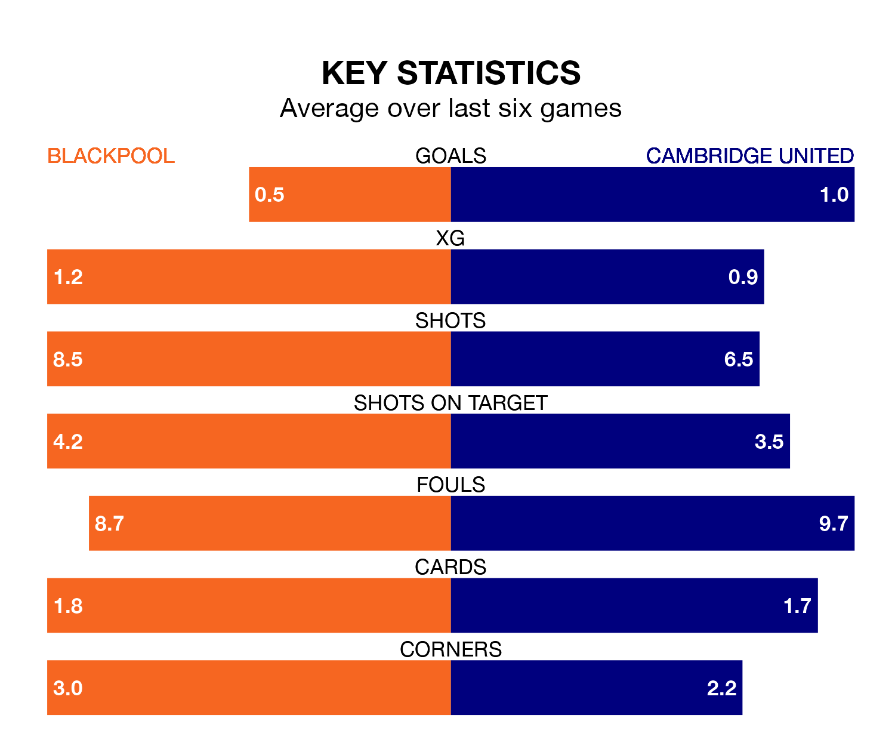

Blackpool are heavy favourites to keep all three points at home in Saturday's kick-off against Cambridge United.
The Seasiders, who sit ninth in EFL League One with 41 games played, are priced at 1.5 to seal victory at Bloomfield Road.
Sitting 10 places and 16 points behind them in the table, Cambridge are 5.1 to win with *Betting Company*, while the draw is at 3.9.
With 37 goals in 40 games so far this season, Cambridge are scoring at below the league average rate with 0.9 goals per game. And they are conceding more than average, letting in 56 goals at a rate of 1.4 per game.
Blackpool, meanwhile, are above average scorers, with 1.4 goals per game, compared to a league average of 1.3. They have conceded 1.0 goal per game.
In Jordan Rhodes, the Seasiders have one of the league's sharpest shooters so far this season. He has notched 15 goals in 29 appearances, to sit fifth in the scoring charts.
His goal rate of one every 152 minutes is slightly quicker than that of Gassan Ahadme Yahyai, United's top scorer with a goal every 153 minutes, and a total of 10 goals in 23 games.
The home team are in mixed form in EFL League One, with two wins and two draws from their last six games.
With two wins and a draw over that period, the visitors' form is slightly worse – they have taken seven points from 18, compared to Blackpool's eight.
Blackpool's last match was on Monday, a 0-0 draw against Wycombe Wanderers.
Cambridge beat Wigan Athletic 3-1 last time out, also on Monday, with Yahyai (two) and Danny Andrew on the scoresheet.
Saturday's match will be refereed by Dean Whitestone, who has taken charge of two EFL League One games so far this season, issuing one red card and booking 11 players. He has awarded one penalty.
The last Blackpool game Whitestone refereed was a 2-1 away win against Peterborough United on February 17. He is yet to oversee a match featuring Cambridge this season.
Updated: 16:41 (UTC), 04/04/24